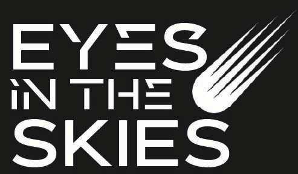

Could alien life be found in the clouds of this exoplanet?
Researchers at Smith University developed the first reflectance spectra of colorful cloud-dwelling microorganisms, gives them a new way to potentially detect similar life on exoplanets.

Researchers at Smith University developed the first reflectance spectra of colorful cloud-dwelling microorganisms, gives them a new way to potentially detect similar life on exoplanets.
Astronomers have seen clear signs of runaway supermassive black holes tearing through other galaxies. If a pair of black holes coalesce into one, much of that vast energy can be released in a few seconds.
Scientists have discovered that interstellar object 3I/ATLASappears to have started spewing huge amounts of water and the release also dislodged even more intriguing materials that potentially date back billions of years.
New discovery reveals that when two stars merge and explode as a red nova, what remains is a cool, massive red supergiant-like star hidden in dust.